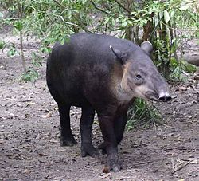
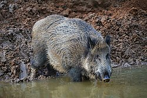
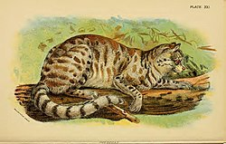
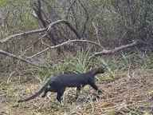
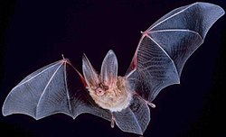
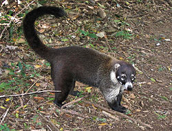
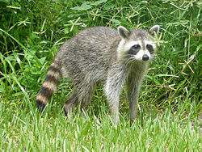
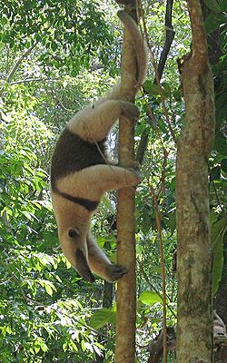

Danto o Tapir (Tapirus bairdii)

Jabalí o Pecarí (Tayassu pecari)

Tigre o jaguar (Felis onca)



Yaguarundi o puma pequeño (Felis yaguaroundi)

Murciélago (Vampirus spectrum)

Pizote solo (Nasua narica)

Mapachín (Procyon lotor)

Oso hormiguero (Myrmecophaga tridactyla)
